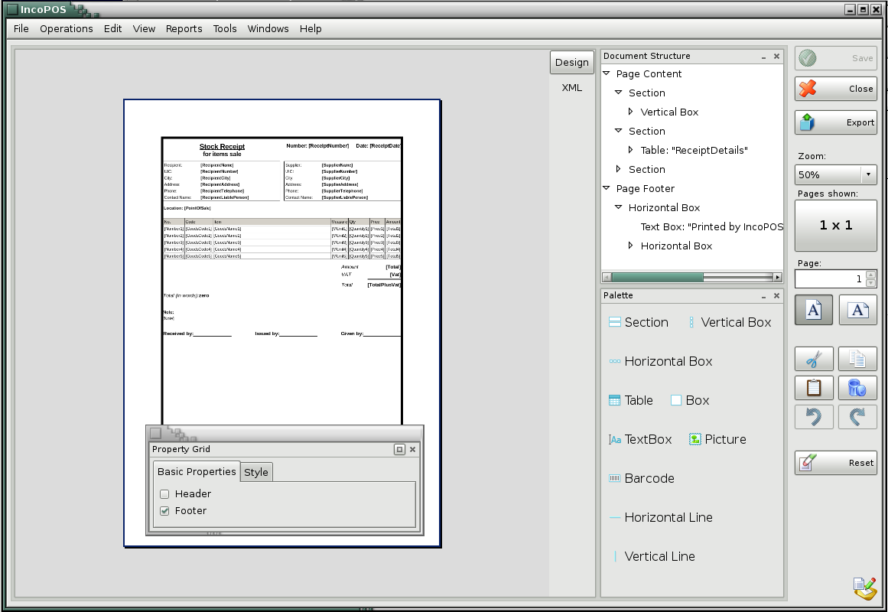
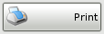
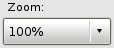

button to close the
document
button to close the
documentDocument Templates
The module Document Templates allows to be created any formats of documents from which the user has a need. The module has a wide range of tools to ensure freedom of action. Created and stored the documents are used for samples in the program. In the following documents can be edited elements and the entire layout.
Once you have selected the document with which you want to create a model for making the operation, in front of you will open a palette with tools for Document Designer and you can make the changes.

Button Save is used to record all changes made so far.
Click the  button to print the document.
Click the button to export the document to PDF, CSV, Excel, Web or XML format.
Use the  button to zoom the document from 10% to 500%.
Click the button to close the
document
�2006-2015 Microinvest, All rights reserved